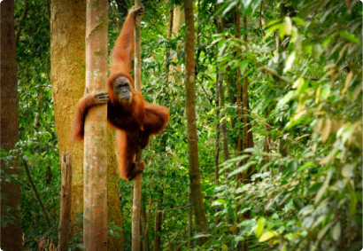

KKP
Discover Kalimantan
Jelajahi

KKP
Jelajahi keindahan alam, budaya, dan tradisi Kalimantan. Dari hutan
tropis yang lebat, sungai-sungai yang memikat, hingga keramahan
masyarakat lokal, Kalimantan adalah destinasi yang penuh keajaiban

Contact
+62 857 1882 6954

Copyright© 2024 KKP. All Rights Reserved.

Discover the Wonders of Kalimantan
natural beauty in Kalimantan
Kalimantan, Indonesia
K
Hutan Kalimantan ialah habitat alami bagi hewan orang utan, gajah
borneo, badak borneo, landak, rusa, tapir dan beberapa spesies yang
terancam punah. Karena kekayaan alamnya, wilayah Kalimantan Indonesia
merupakan salah satu dari enam koridor ekonomi yang dicanangkan
pemerintah Republik Indonesia di mana Kalimantan ditetapkan sebagai
pusat produksi dan pengolahan hasil tambang dan lumbung energi
nasional di Indonesia.
Pulau Kalimantan adalah surga alam dengan hutan hujan tropis yang kaya
akan flora dan fauna unik seperti orangutan, bekantan, dan macan dahan.
Sungai-sungai besar seperti Kapuas dan Mahakam menjadi nadi kehidupan
masyarakat, menawarkan pemandangan spektakuler dan aktivitas budaya.
Pegunungan dan gua-gua seperti di Taman Nasional Kayan Mentarang menambah
daya tarik alamnya.
Keberagaman budaya di Kalimantan tercermin dari banyaknya suku asli,
seperti Dayak, Banjar, dan Melayu. Suku Dayak terkenal dengan tradisi seni
ukir, tari-tarian adat, rumah panjang (rumah betang), dan ritual keagamaan
yang sarat makna. Harmoni antara alam dan budaya membuat Kalimantan
mempesona sekaligus berharga untuk dilestarikan.

Wikipedia Kalimantan
Surga ekowisata dengan Hutan Bukit Soeharto dan Balikpapan yang
modern
Kalimantan Timur, Indonesia
Eksotis dengan Sungai Kapuas dan budaya Dayak yang kaya
Keindahan alam Taman Nasional Sebangau dan keramahan Dayak Ngaju
Kalimantan Tengah, Indonesia
Pesona budaya Banjar dan pasar terapung yang ikonik
Kalimantan Selatan, Indonesia